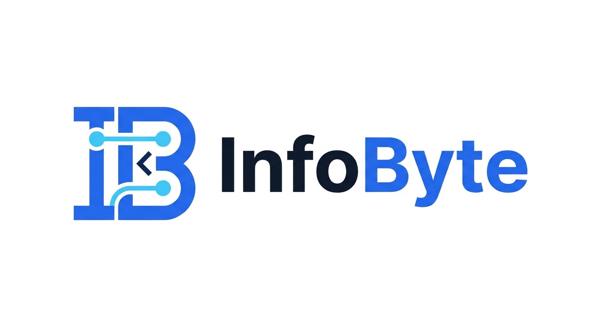

Ережені еске түсіріңіз
Дәптерге тақырып бойынша есіңізде қалған ережені жазыңыз. Содан кейін оқулықты ашып, қай жерін толықтыру керегін тексеріңіз.

Қай тақырыптан бастарыңызды білмесеңіз, соңғы сынақта қиналған бір сұрақты таңдаңыз. InfoByte дайындықты шағын қадамдарға бөлуге көмектеседі.
Кіру немесе тіркелуБір оқу сессиясын бір тақырыпқа арнаңыз. Мысалы, пайызға берілген есептер қиын болса, бүгінгі мақсат ретінде жеңілдік мөлшерін өз бетіңізше есептеуді таңдаңыз.
Дәптерге тақырып бойынша есіңізде қалған ережені жазыңыз. Содан кейін оқулықты ашып, қай жерін толықтыру керегін тексеріңіз.
Бірнеше тапсырманы жауапқа қарамай орындаңыз. Дұрыс нұсқаны тапқан соң, оны неге таңдағаныңызды өз сөзіңізбен түсіндіріңіз.
Қай қадамда қателескеніңізді белгілеңіз. Келесі күні сол тапсырманы қайта шығарып, шешу жолын еске түсіре алғаныңызды тексеріңіз.